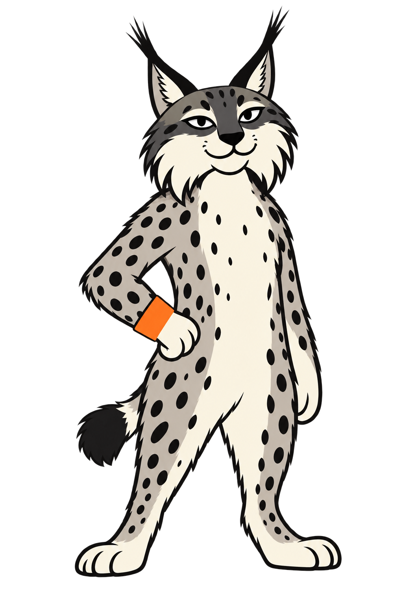

Рысь №7
Статичный мастер для первой интеграции. Анимации ещё нет.
Посмотреть в прототипеВыбранный образ и отдельный мастер
Исходник №7 — утверждённый образ
GPT Image — мастер для пробы в прототипе Сохранены стойка, пятна, напульсник и характер морды. Генерация немного раскрыла глаза, сгладила контур шерсти и изменила отдельные пятна. Это производная версия для приёмки, не пиксельная копия.
Проба головы
На 24 px морда теряет детали. Эту пробу не используем как иконку или аватар. На 48/96 px характер читается лучше; отдельный малый знак ещё не выбран.